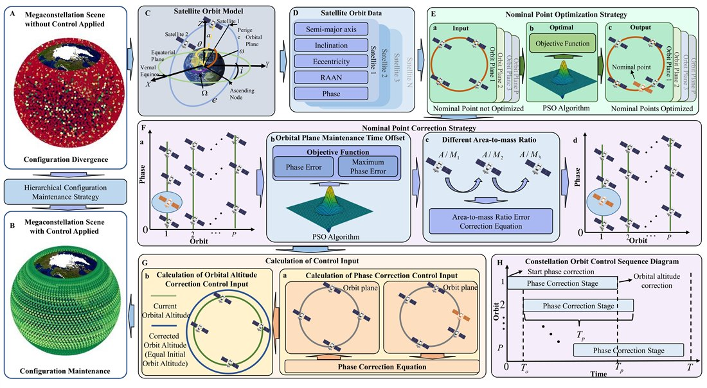
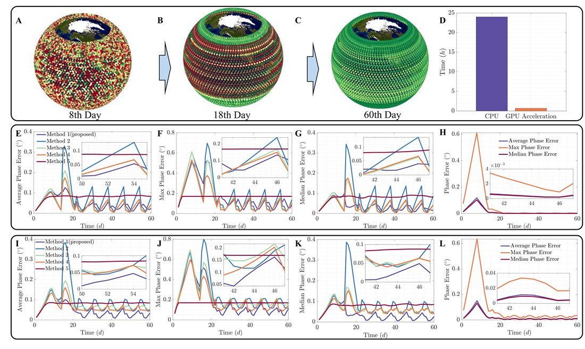
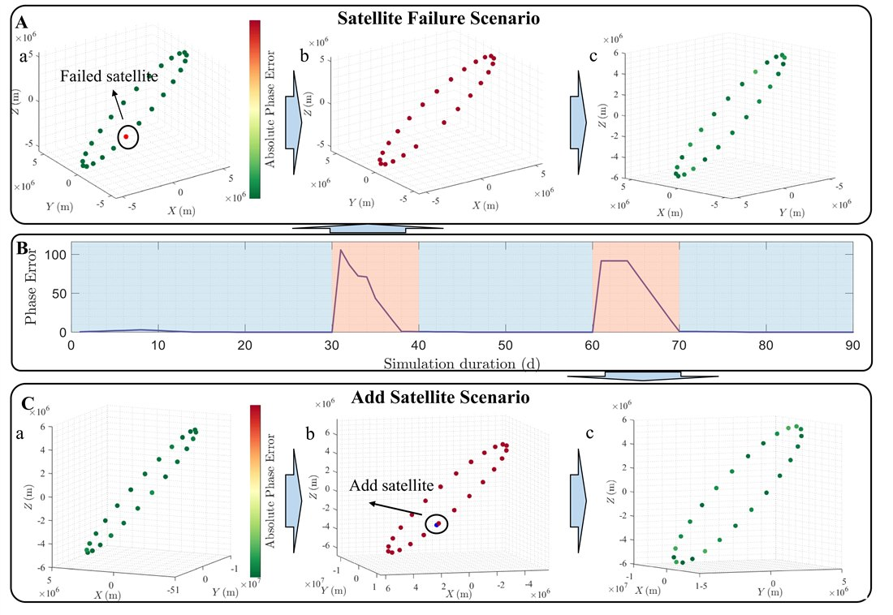

尹天乐：巨型星座层级协同的构型维持优化发表于 IEEE TAES
尹天乐同学参与完成的研究成果 Optimization-Driven Hierarchical Coordination for Sustainable Megaconstellation Operations 发表于 IEEE Transactions on Aerospace and Electronic Systems（2026, 62: 15269–15282，导师张承玺为第一作者）。论文把星座构型维持拆成两层：先用多级多目标优化设计标称相对状态，兼顾面内几何、面间相位与标称点修正；再用两阶段方案计算相位与轨道高度的控制输入。巨型星座因此可视为若干独立管理的轨道面并行求解。

问题：万星规模下，构型维持不能逐星求解
低轨巨型星座长期受地球 J2 项与大气阻力影响，相位与轨道高度随时间漂移，星座内部的空间规律性被破坏。传统做法用一个固定卫星作为面内标称点，再按相位阈值触发修正；这种策略在万星规模下有两处难处：一是标称点固定，相位误差难以进一步压低；二是逐星串行仿真耗时过长，60 天、一万颗星的场景在 CPU 上需要约 24 小时，无法支撑大规模验证。
方法：两级优化加两阶段控制
- 标称相对状态设计：面内以总相位误差与最大相位误差构造 F1（PSO 求解）；把各面标称点视为虚拟卫星，在虚拟面上用 F2 处理面间相位；再针对面间时间偏移与面质比差异做标称点修正，初始化阶段与稳态阶段分别用 F3、F4。
- 两阶段控制输入：先做面间相位修正，再按天做轨道高度修正，避免为压相位而持续降低高度、随后又需额外抬升。
- 分层解耦与并行：各轨道面独立计算，标称点优化、控制输入与轨道预测可在 GPU 上并行；单颗卫星失效或补入时只影响所在轨道面。
结果：相位更准、控制更省、可扩展到万星
- 场景 1 稳态相位误差为 Ea = 0.05°、Emax = 0.14°、Em = 0.04°，优于固定标称点方法的 0.13°/0.24°/0.14°，也优于极限环控制。
- 总控制输入 1.7871×107 m，相比传统极限环方法的 2.1001×107 m 降低约 15%。
- 控制频次降到每月 6–7 次，低于 Starlink 在轨数据中约每月 12 次的抬升次数。
- 60 天、一万颗星的仿真，CPU 串行需约 24 小时，GPU 并行后缩短到约 40 分钟。
- 场景 2 引入 0.008–0.01 m²/kg 的面质比差异，稳态误差仍为 0.06°/0.16°/0.05°；场景 3 在第 30 天模拟卫星失效、第 60 天补星，构型误差仍能收敛。

